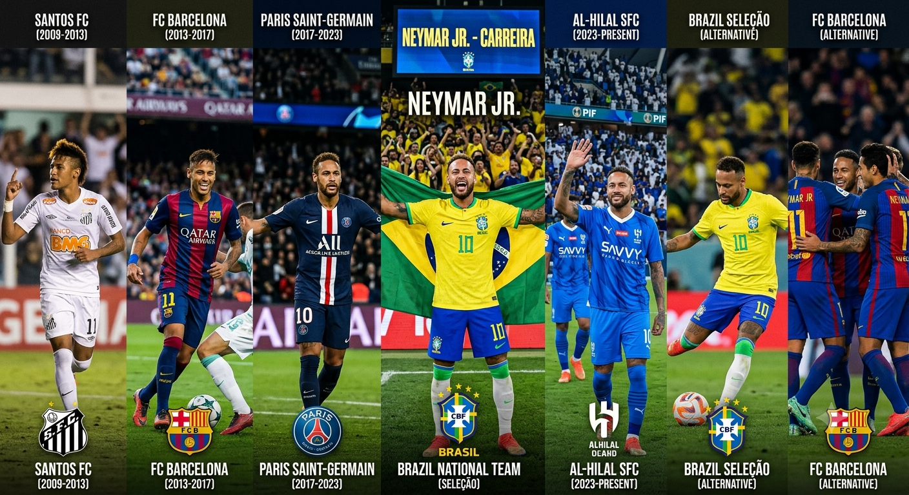

Neymar: A trajetória de um dos maiores craques do futebol brasileiro
Poucos jogadores marcaram o futebol moderno como Neymar. Conhecido por sua habilidade, velocidade e criatividade, o atacante conquistou milhões de fãs ao redor do mundo e construiu uma carreira repleta de títulos, recordes e momentos memoráveis
O início da carreira
Nascido em 5 de fevereiro de 1992, na cidade de Mogi das Cruzes, Neymar demonstrou talento para o futebol desde muito jovem. Ele ingressou nas categorias de base do Santos Futebol Clube e estreou como profissional em 2009, rapidamente se tornando um dos principais jogadores do futebol brasileiro.
O sucesso na Europa
Em 2013, Neymar foi contratado pelo FC Barcelona, onde formou um dos ataques mais famosos da história ao lado de Lionel Messi e Luis Suárez. Durante esse período, conquistou títulos importantes, incluindo a Liga dos Campeões da UEFA.
Carreira pela Seleção Brasileira
Pela Seleção Brasileira de Futebol, Neymar conquistou a Copa das Confederações FIFA 2013 e a medalha de ouro nos Jogos Olímpicos do Rio de Janeiro 2016. Além disso, tornou-se o maior artilheiro da história da seleção brasileira em partidas
Legado
Mesmo enfrentando lesões ao longo da carreira, Neymar continua sendo uma das maiores referências do futebol brasileiro. Sua trajetória inspira atletas e fãs, consolidando seu nome entre os grandes jogadores da história do esporte.